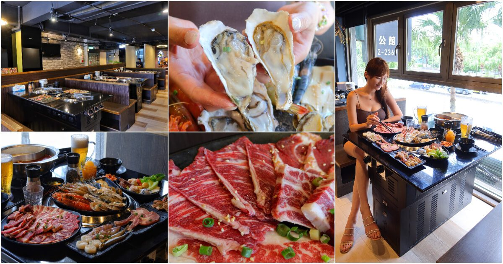

關於本站
歡迎光臨本站。
這裡主要介紹台北地區的美食餐廳，有餐食圖片可參考。
※未經許可，請勿擅自複製轉載。
台北TOP 3 餐館介紹
●GUSTOSO義大利餐廳
連續三年獲得台北米其林指南推薦的「慕軒飯店」，旗下的「GUSTOSO義大利餐廳」，主打義大利經典南義家鄉菜的質樸美味，慕軒飯店自助餐是採半自助式的用餐方式，
提供多款精緻主餐，搭配豐盛的自助沙拉吧，自助吧選擇多樣又能無限享用，慕軒飯店餐廳鄰近敦化南路的林蔭大道，
用餐氣氛絕佳，很適合中午或週末來體驗一下大安區義式餐廳!
●發肉燒肉餐酒
台北最夯的東區日式燒肉非發肉燒肉餐酒莫屬! 網評4.9 顆星的高人氣，歸功於店家對食材的嚴格挑選跟餐點的創意搭配，以及來到這裡吃燒肉，還有帥氣店員幫烤，
像朋友一樣跟客人話家常，用餐環繞融洽氣氛，餐後甜點深夜裡的法國甜點更是擄獲女孩們的心，店家同時也是東區寵物友善餐廳，
不只提供專屬寵物餐，也讓寵物可以跟主人一同愉快用餐，壽星來店用餐還有神秘活動，將整體氣氛推向最高點!
店家充滿熱情跟活力的氛圍，平日就幾乎天天客滿，沒預訂的話可是一位難求喔～
●瓦崎燒烤 – 公館店
位在公館商圈的燒烤吃到飽-瓦崎燒烤公館店，就在公館捷運站3號出口附近的公館燒肉，台北平價燒烤吃到飽共有三種價位，最低只要599元起就有燒烤加火鍋，
一次滿足雙享受! 頂級食材有澳洲M9和牛、安格斯黑牛、天使紅蝦、生蠔等等，自助吧還有沙瓦、啤酒無限暢飲 (開車不喝酒)，
冰淇淋還是知名品牌哈根達斯跟Cold Stone耶，這麼高CP值的吃到飽，適合揪三五好友一同來開吃!
作者介紹

- 暱稱 ：
- William
- 職業 ：
- Web相關工作的SOHO族
- mail ：
- iWilliam.tang@gmail.com